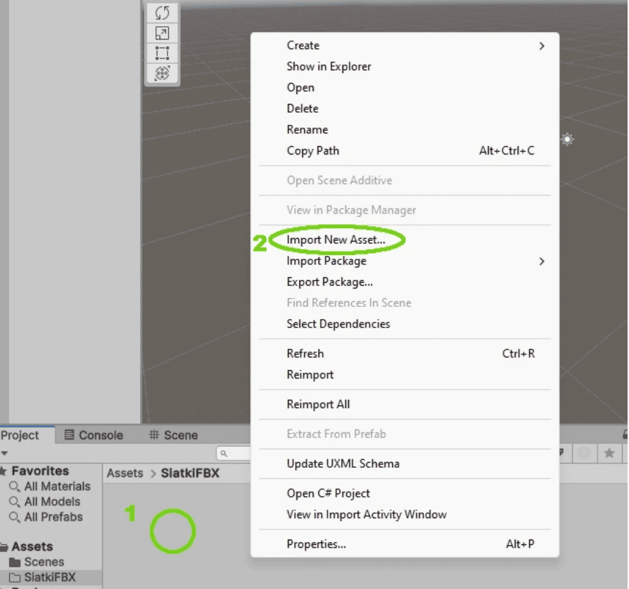

Strona stanowi praktyczno-teoretyczne wprowadzenie do tematyki tworzenia gier i aplikacji
interaktywnych, opierając się na trzech kluczowych technologiach: silniku
Unity, programie
Blender oraz języku C#.
Strona powstał w celu zademonstrowania kompletnego procesu
deweloperskiego, łączącego grafikę trójwymiarową z zaawansowaną logiką programistyczną.
Blender wykorzystywany jest tutaj do kreacji modeli 3D i animacji, które stanowią
wizualny fundament projektu. Unity pełni funkcję środowiska łączącym wszystkie elementy, natomiast język
C# służy do tworzenia skryptów sterujących mechaniką i interakcjami.
Kluczowym aspektem opracowania jest prezentacja właściwego przepływu pracy. Opisane tu
zagadnienia pozwalają zrozumieć, w jaki sposób przygotować zasoby graficzne i poprawnie połączyć
je z kodem, aby uzyskać funkcjonalną całość. Materiał ten służy jako baza wiedzy niezbędna do
realizacji własnych projektów w Unity.
Technologie
Unity
Unity to serce całego projektu – plac budowy, na którym łączysz grafikę i kod w całość. To
tutaj decydujesz o fizyce i zasadach świata, zamieniając luźne pliki w działającą grę.
Blender
To twoja cyfrowa pracownia. Działa jak wirtualna glina, z której rzeźbisz postacie i budynki.
Jeśli Unity jest silnikiem, to Blender odpowiada za karoserię i styl twojej gry.
C#
Język, którym „rozmawiasz” z grą. To on sprawia, że postać skacze, a wrogowie atakują. Bez
niego gra byłaby tylko ładną, ale nieruchomą makietą – to on tchnie w nią życie.
Łączenie aplikacji
Eksportowanie obiektów z blendera
Przenoszenie modeli z Blendera do Unity można porównać do tłumaczenia książki
na inny język. Blender to Twój warsztat artystyczny, a Unity to plac budowy gry. Żeby te dwa
programy się
dogadały, musisz użyć formatu FBX – to taki uniwersalny plik, który rozumieją oba
narzędzia.
Cały proces zaczynasz w Blenderze. Kiedy masz już gotowy model (np. postać czy mebel), musisz go
zaznaczyć i wybrać opcję eksportu do pliku .fbx (znajdziesz to w menu File ->
Export). Autor strony zwraca uwagę, że w tym momencie warto zerknąć w ustawienia po prawej
stronie okna zapisu.
Kiedy masz już plik na dysku, wchodzisz do Unity. Tutaj dobra rada: zrób sobie najpierw osobny
folder, np. "Modele", żeby nie robić bałaganu. W tym folderze klikasz prawym przyciskiem myszy,
wybierasz Import New Asset i wskazujesz swój plik FBX.
I tu pojawia się najważniejszy moment. Po wrzuceniu modelu do Unity, może on wyglądać na smutną,
szarą bryłę bez kolorów. Musisz wtedy kliknąć na swój model i w bocznym panelu (Inspektorze)
znaleźć przyciski do "wypakowania" materiałów i tekstur.
Teraz wystarczy przeciągnąć gotowy obiekt na środek ekranu (na Scenę). Od tej chwili jest on
pełnoprawnym elementem gry – możesz do niego pisać skrypty w C#.
Menu eksportu: Wybór formatu FBX w Blenderze.Konfiguracja: Ustawienie "Mesh" i osi współrzędnych.

Unity: Importowanie gotowego pliku do folderu projektu.
Użycie C# w Unity
Unity działa w oparciu o język programowania C#. Jest to
rozwiązanie dobrane tak, aby zachować
równowagę między dużymi możliwościami a łatwością nauki. W przeciwieństwie do starszych technologii,
C# jest bezpieczniejszy dla twórcy, ponieważ komputer automatycznie zajmuje się zarządzaniem
pamięcią.
Cała konstrukcja świata gry opiera się na systemie tak zwanych GameObjectów.
Najlepiej wyobrazić
je sobie jako puste pudełka. Aby taki pusty obiekt stał się postacią, trzeba wypełnić go
Komponentami.
Ponieważ gotowe elementy rzadko wystarczają, niezbędne staje się pisanie własnych skryptów.
Kod stworzony w C# staje się nowym, autorskim komponentem.
Ogromnym ułatwieniem w codziennej pracy jest ścisła integracja kodu z edytorem wizualnym.
Zmienne zdefiniowane w skryptach są widoczne w panelach sterowania, co pozwala na edycję gry „na
żywo”.
Inspektor: Edycja komponentu światła i podgląd na scenie.Profiler: Analiza wydajności skryptów i zużycia pamięci.
Podstawowa struktura skryptu
Każdy nowy skrypt w Unity dziedziczy z klasy bazowej MonoBehaviour. To właśnie ona
pozwala
Twojemu kodowi "rozmawiać" z silnikiem gry. Dwie najważniejsze metody, które spotkasz w prawie
każdym
skrypcie, to:
Start() – uruchamia się tylko raz, w momencie pojawienia się obiektu w grze.
Służy do konfiguracji początkowej (np. pobrania punktów życia).
Update() – uruchamia się ciągle, klatka po klatce (nawet 60 razy na sekundę).
Tutaj sprawdza się wciśnięte klawisze i przesuwa postać.
Oto przykładowy kod prostego sterownika postaci:
using UnityEngine;
public classProstyRuch : MonoBehaviour
{
// Zmienna publiczna będzie widoczna w Inspektorze Unity!public float predkosc = 5.0f;
voidUpdate()
{
// Pobranie wciśniętych klawiszy (W/S lub strzałki)float ruchPionowy = Input.GetAxis("Vertical");
// Przesunięcie obiektu do przodu w czasie rzeczywistym
transform.Translate(Vector3.forward * ruchPionowy * predkosc * Time.deltaTime);
}
}
W powyższym przykładzie zmienna predkosc jest publiczna. Dzięki temu, po przeciągnięciu
skryptu na obiekt w Unity, zobaczysz pole numeryczne, w którym możesz zmieniać szybkość poruszania
się
bez konieczności wracania do kodu. Użycie Time.deltaTime gwarantuje, że ruch będzie
płynny niezależnie od liczby klatek na sekundę.
Przykład
Materiał pokazujący jak prawidłowo importować obiekt z Blendera do Unity